速览
这对角色和舞台也成立：尺度感要对（参见图形分类「把握好尺度感」）。特效篇，尤其像火焰这样的东西常有这种情况：与角色同大或更大的火焰，看起来只有蜡烛或火把程度的大小。这真的非常常见，就是说很容易中招。从画法上讲，就是密度不够。监修时出过这样的例子：针对焰的剑冒出的火焰，示意所要求的密度——剑上的火焰变成了蜡烛火焰一样，他希望做出好的尺度感，所以举了例子。实际完成的挥剑是这样的：还差一点，但从贴图容量来说也是没办法吧。火焰的话，可以增加画出来的循环次数，或使用更小、更细的粒子等，让东西接近合适的尺寸；但太执着就会吃贴图内存。特效是一直在动的东西，所以不那么细致也没关系，粗犷、快速是重点。这次的话题好像都在说火焰，但当然不限于火焰：作为画特效的心得，要对世界的大小给出正确的尺度感。
1. 尺度感要对 0:03
这对角色和舞台也成立：尺度感要对。
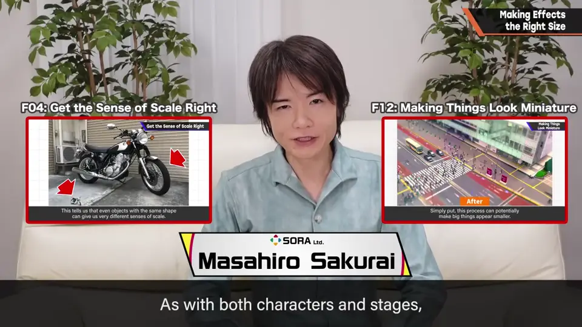
特效篇，尤其火焰常有这种情况：与角色同大或更大的火焰，看起来只有蜡烛或火把程度的大小。
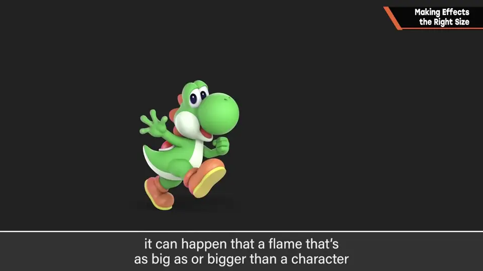
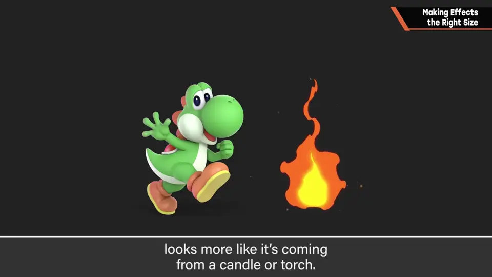
这真的非常常见。从画法上讲，就是密度不够。
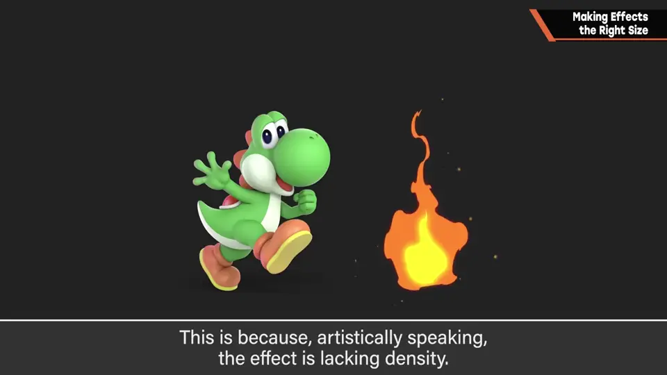
2. 焰之剑的火焰 0:34
监修时出过这样的例子：针对焰的剑冒出的火焰，示意所要求的密度。
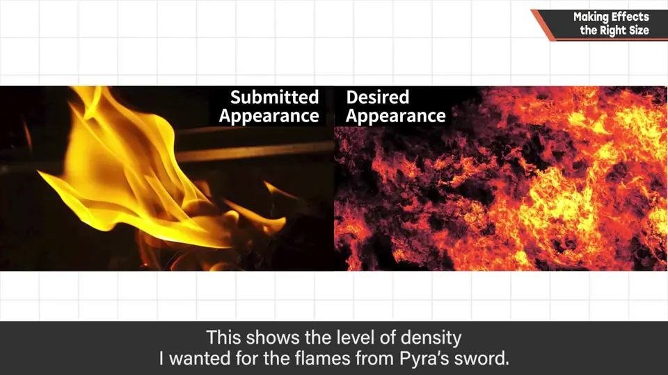
剑上的火焰变成了蜡烛火焰一样，他希望做出好的尺度感，所以举了例子。
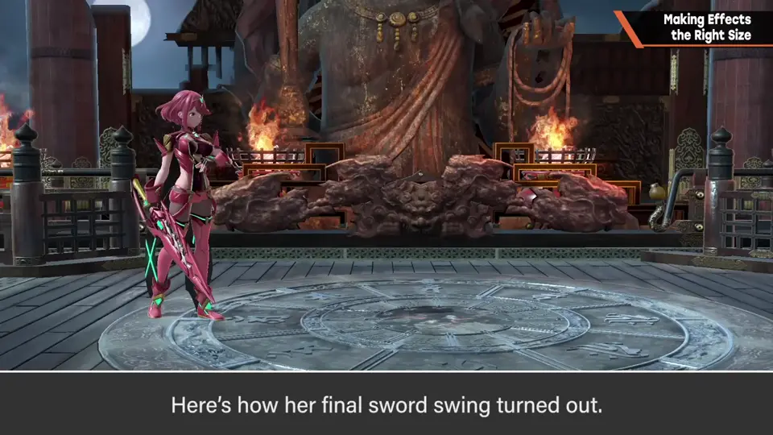
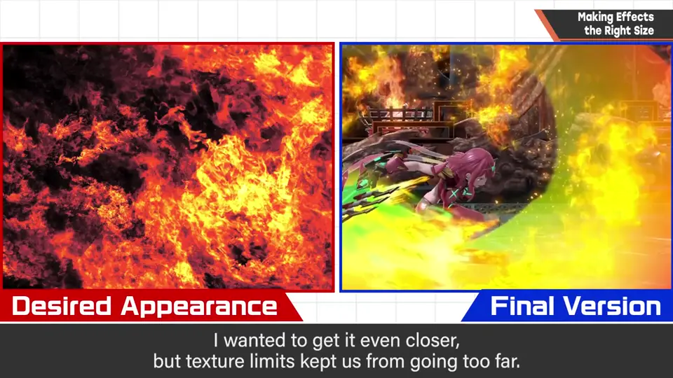
还差一点，但从贴图容量来说也是没办法吧。
3. 怎样接近合适的尺寸 1:10
- 增加画出来的循环次数。
- 使用更小、更细的粒子。
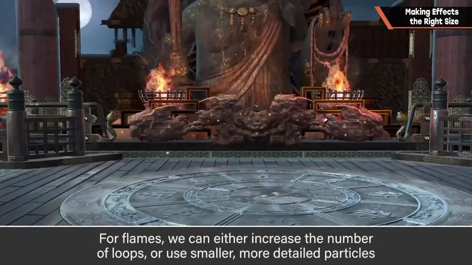
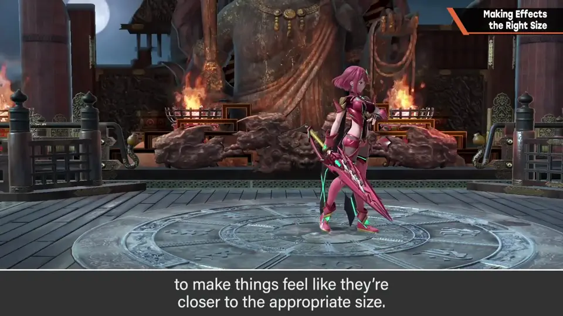
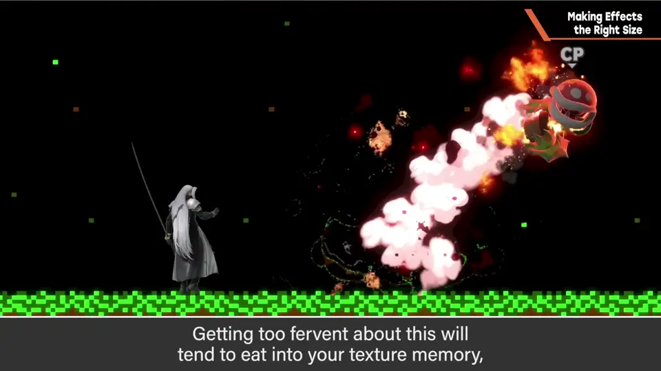
但太执着就会吃贴图内存。
特效是一直在动的东西，不那么细致也没关系。粗犷、快速是重点。
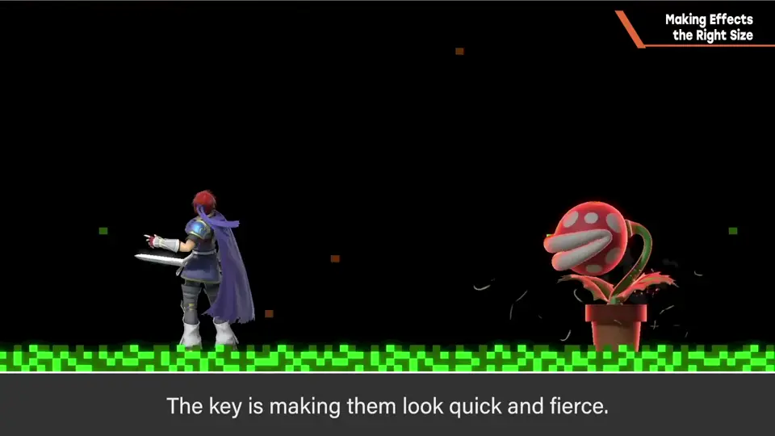
4. 不限火焰 1:39
这次的话题好像都在说火焰，但当然不限于火焰。
作为画特效的心得：要对世界的大小给出正确的尺度感。
自测题
1. 大火焰为什么常看起来像蜡烛？
密度（信息量）不够。 0:30
2. 让火焰接近合适尺寸的两种方法是什么？
增加循环次数；用更小、更细的粒子。 1:15
3. 特效为什么不必画得太细？
特效一直在动，粗犷、快速更重要；太细还会吃贴图内存。 1:28